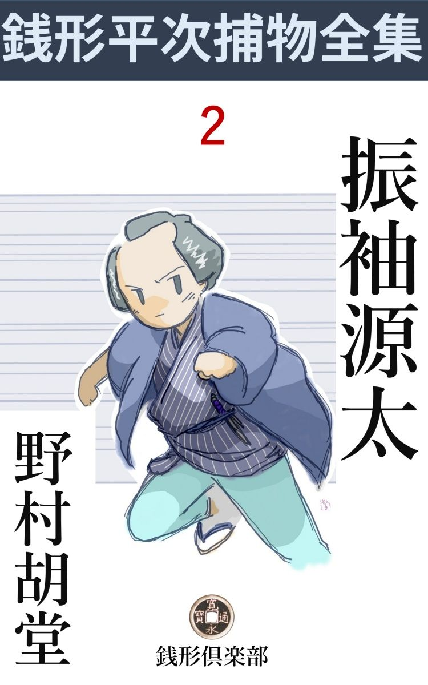
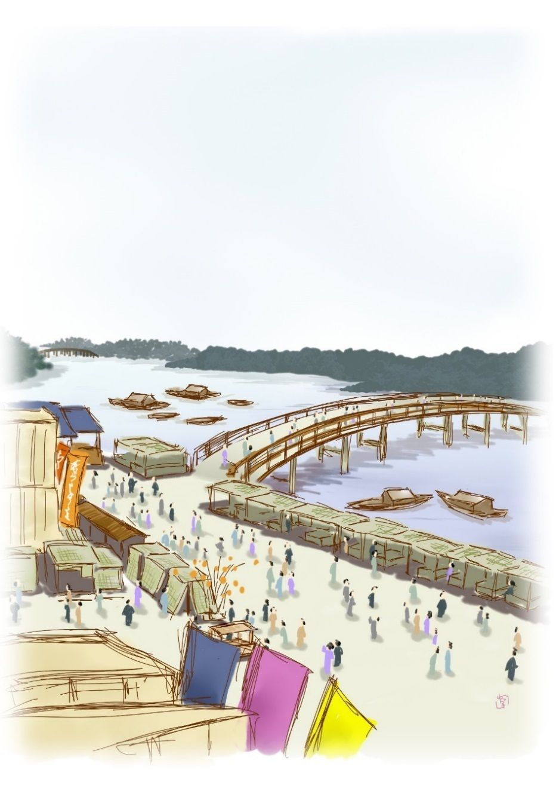

| 振袖源太: 銭形平次捕物全集第２話 (銭形倶楽部) | |
| 野村胡堂 | |
| ZENIGATA CLUB (2018) | |

一
両国に小屋を掛けて、江戸開府以来最初の軽業 というものを見せた振袖源太。前髪立ちの素晴らしい美貌 と、水際立った鮮 やかな芸当に、すっかり江戸ッ子の人気を摑んでしまいました。
あまりの評判に釣られるともなく、半日の春を小屋の中の空気に浸 った、捕物の名人で『銭形』と異名を取った御用聞の平次。夕景から界隈の小料理屋で一杯引っかけて、両国橋の上にかかったのはもう宵の口。
小唄か何か口吟 みながら、十六夜 の月明りにすかして、何の気もなくヒョイと見ると、十間ばかり先に、欄干 へ片足を掛けて、川へ飛込もうとしている人間があります。
「あッ」
と言ったが、駆け付けるには少し遠く、大きな声を出せば、直ぐ飛び込まれるに決っております。
思わず袖へ手が入ると、今しがた剰銭 にとった永楽銭 が一枚、右手の食指と拇指 の間に立てて、ろくに狙いも定めずピュウと投げると、手練は恐ろしいもので、身を投げようとする男の横鬢 をハッと打ちます。
「あッ、何をするんだ」
思わず飛込みそうにした欄干 の足を引込めて、側へ飛んで来た平次に、噛みつきそうな顔を見せます。
「お、危ねえ。俺は河童 の真似は得手 じゃねえから、飛込まれたら最後見殺しにしなきゃアならねえ」
そう言いながら、冗談らしく相手の袖を押えた平次。咄嗟 の間に見極めると、年の頃五十六七、実体らしい老爺 さんで、どう間違っても身投などをする柄 とは見られません。
「無法な事をするにも程があったものだ。こんなに脹 れちゃったじゃないか、見ろ」
老爺は身投することも忘れて、しきりにこめかみに唾 を付けながら、小言を言っております。
「勘弁しねえな、とっつぁん、そうでもしなきゃア、間に合わなかったんだ。命と釣替えなら、こめかみへ穴が明いたって我慢が出来ねえこともあるめえ」
「不法な人があったものだね、どうも」
老爺さん甚だ平かじゃありませんが、永楽銭一枚の痛手で、兎に角死ぬ気がなくなってしまったことだけは事実のようです。
間もなく平次は、もう一度東両国の小料理屋に取って返して、身投げを思い止らせた老爺の話を聞いておりました。
「人間、洒落 や冗談に死ねるものじゃねえ、ざっくばらんに話して見なさるがいい。金も知恵もあるわけじゃねえが、何を隠そう、俺は平次と言ってお上の御用を勤める人間だ。次第によっちゃ相談相手にならねえものでもあるめえ」
「え？ 銭形の親分さんで御座いましたか。これはいい方に助けて頂きました。こうなればもう、嫌だと仰しゃっても申し上げずにはおられません。どうか、終末 まで皆んなお聞きなすって下さいまし」
世にも奇怪な話が、老爺の朴訥 な調子でこう描 き出されて行きます。
二
日本橋通り四丁目に八間間 口の呉服 屋を開いて、一時越後屋の向うを張った『福屋善兵衛』、丁稚 小僧八十人余りも使おうという何不足ない大世帯の主人ですが、先月の末から、五人の子供のうち三人まで順々に行方不明になったには驚きました。
最初は先月の二十五日、二十四になる総領が、日本橋の店から白昼煙のように消えて無くなり、月を越して本月の五日、二番目の二十一になる息子が、これも日本橋の家で、一と晩のうちに行方 が判らなくなってしまったのです。
そればかりなら偶然 の廻り合せとも思ったでしょうが、続いて昨日の十五日、三番目の十八になる娘が、親類の家へ泊りに行っていて、その先から誘拐 されてしまったのです。
こう十日目十日目に、上から順々に子供が見えなくなって行くところを見ると、もう偶然の出来事と済ましているわけには行きません。主人の善兵衛はことのほか心を痛めて、『金ずくで済むことなら』とあらゆる探索 をしましたが、不思議なことに三人の行方が一向判らないばかりでなく、その行方不明になった足取りも、まるで見当が付かないのです。
これだけの事は、銭形の平次も聞き知っておりましたが、改めて関係者の口から聞くと、なるほど事件の裏には濃厚 な犯罪の匂いがありそうです。
「私はその三番目のお嬢様のお伴 をして、御親類のところへ参りましたが、行方不明になったと言って、今更『福屋』へ帰る面目 も御座いません。まる一昼夜、心当りを探し抜いた挙句 、思案に余って両国から、フラフラと入水 しようとしたので御座います」
忠実そうな老爺が、話了 って到頭ボロボロと泣き出してしまいました。
「成程、話を聞けばもっともだが、お前さんが死んだところで、娘御が帰って来るわけのものじゃあるめえ」
「ヘエ------」
「よしッ、俺が一番乗出してやろう。それだけの業 をするのは、どうせ並大抵の人間じゃあるまいから、骨が折れても張合があると言うものだろう。お前さんは知らん顔をして帰って、内の様子を俺のところまで知らせちゃくれまいか」
「親分が乗り出して下さりゃ千人力で、有難う御座います」
銭形の平次は人を助けたばかりに、到頭この事件の真っ只中に飛込んで行くことになってしまいました。
三
平次は早速福屋へ乗込んで見ましたが、日も経っていることであり、行方不明になった三人の兄妹が、どうして誘 き出されたか、まるで見当が付きません。その頃は警察制度も至って不完全で、町人もそれに信頼する気は微塵 もありませんから、これ程の事件を、何処へ届け出るでもなく、八十何人の奉公人や、一家身内の者が寄ってたかって、唯もうワイワイと騒ぐばかりです。
わけても主人の善兵衛は、半病人のような有様、評判のいい岡っ引の平次が顔を見せると、
「親分、何とかして三人の者を探し出して下さい。場合によっては、福屋の身上 を半分潰しても構いません」
拝まないばかりに頼み込みます。
残った家族というのは、十六になる娘のお糸と、六つになる男の子の栄三郎と、一年ばかり前に娶 った後妻 のお滝だけ、世間並に考えると、この継母のお滝が一番疑われる地位にあるわけです。
本人もそれを悉 く承知で、岡っ引の平次と顔を合せると気の毒なくらいオドオドしますが、平次の眼から見れば、大それた悪事を働くほどの女とも思われません。
年の頃三十二三、善兵衛に比べると少し若いが、大家 の女房にふさわしい美しさも品もあり、奉公人の評判も先ず悪くない方です。
外に奉公人は八十幾人、これは片っ端から調べるわけにも行かず、その中には、身許の怪しい者は一人もないという大番頭の証言を信ずるより外にはありません。
平次は、その儘引揚げて兎に角与力笹野 新三郎の耳へ、一件の始末を囁 いて置きました。
「なるほど、それは可笑 しい。突っ込んで調べ上げたら、飛んだ大物が掛って来るかも知れない。もう少し見張っているがいい」
笹野新三郎もこう言って油をかけてくれます。
一日、二日と経つうちに、『福屋』の一家は新しい不安に閉 されるようになりました。今までの例によれば、この二十五日には四番目の娘お糸が行方不明になる番です。
お糸というのはこの間行方不明になった姉のお清と共に、日本橋の二人小町と言われた美人ですが、自分の身に降りかかる恐ろしい危難を予知したものか、近頃は一日増しに憂鬱 になって行きます。それよりも心配したのは父の善兵衛。
「お糸、どこにいる、お糸」
と少しでも姿を見せないと、家中探し廻るというあわてよう、全く気の毒で正面 には見ておられません。
「ここは人の出入りが激 しくて、とても見張ってはおられませんから、二十四日の晩からお糸は向島の寮 へやって置くつもりです。ついては親分、忙しいところを、何とも申し兼ねますが、二十五日一日だけ、娘の側へ附いてやっては下さいませんか。そうして下されば、外の者が百人附いているより心強いわけで御座いますが------」
福屋善兵衛が折入っての頼みです。
「相手は何分容易 な者じゃない。私が見張っていたところで、防 ぎようはないかも知れませんよ。それを承知なら一日お邪魔をさせて頂きましょう」
銭形の平次ともあろうものが、甚だ自信のないことを言います。
四
その日、娘のお糸を護って向島の寮 の警戒は、物々しいと言おうか、大袈裟 と言おうか全く話になりません。日本橋の店から来た屈強な手代が十五六人、それに平次の手下が五六人、寮の番人やら女中やら、本店から来たお糸附の奉公人やら、近所の衆の手伝いを加えると、総勢三十人あまり。美しいお糸を十重 二十重 に包んで、昼のうちから水も漏 らさぬ警戒振りです。
昼のうちは、それでも何事も起りませんが、あまり騒ぎが大袈裟だったので、夜になると、皆んなの顔には明らかに疲労 の色が漂 います。
平次はそれを督励 して、否応 言わさず部署につけました。寮の入口という入口には、人を二人ずつ配置して、危ないと思った場所には、雨戸一枚に一人といった工合に、蟻の這い出る隙間もなく人を配ってしまいました。
お糸は早くから気に入りの女中お千代と自分の部屋に籠ってしまいましたが、いかに警戒が大事でも、日本橋小町と謳 われた十六娘の寝室に押し込んで、その美しい寝顔の番人まですることは平次に出来ることではありません。幸 い行き止りの二方口の部屋ですから、廊下には信用の出来る子分を二人張り込ませ、自分は日本橋からやって来た大番頭の嘉七、寮の番人夫婦などと一緒に、次の部屋に陣取って、夜と共に語り明かす決心を定めました。
「お嬢様、お休みなさいませ。お召換 は------まア、その儘で------」
そんな事を言う女中の声が手に取るよう、やがて不安のうちに眠りに就いたものか、隣室の物音がピタリと絶えます。
平次は寮の番人夫婦に目くばせをすると、お神さんは立って、襖を細目に開けました。中には薄暗い行燈 の蔭に、派手な夜の物を深々とかぶった娘の頭 が、平次の方からも手に取るようです。
「------」
うなずいて見せるとお神さんは、そのまま唐紙を閉めて元の座に帰りました。
向う河岸を山谷堀に通う猪牙 の音の断続したのも暫し、やがて向島の土手は太古 のような静寂 に更けて行きます。
それから三刻ばかり、家の内外の者は一人として眠ったものはありません。刻々高まって行く異常な昂奮 を抑えて、窓から暁の光の忍び込むのを見た時は、全く腹の底から救われるような心持になりました。
「やれ有難い」
番人夫婦は、明らさまにそう言って、掌 で額を叩いたりなどしました。
雨戸を開けると、一パイに春の陽が、歓喜と希望とを惜し気もなく家中に漲 らせます。
が、その時不意に、
「あッ、お嬢様がッ」
隣室から女中の声。
唐紙を押し倒すように飛込んで行くと、お糸の床は藻抜 けの殻 で、その側に女中のお千代が、あまりの事に尻餅を突いたなり、ろくに口もきけません。
平次は飛付くように、床の中へ手を入れました。中はまだ人肌の温みが残って、誘拐 されたにしても、そんなに遠くへ行ったとも覚えません。
「家から誰も出すな。持場持場を固 めて、手に余る奴が飛出したら呼子を吹けッ」
平次は縁側に立って、凜々 と朝の空気の中に響かせます。
それからまる半日、寮の中は煮えくり返るような騒ぎでした。畳をあげ、戸障子を外 し、天井裏まで入り込んで、鼠一匹見落さないように探しましたが、曲者の姿は愚 か、暗がりに隠したらピカピカ光るだろうと思うような、美しいお糸の姿も見えません。
主人善兵衛の歎き、継母 お滝の駭 きは申すまでもなく、第一、これ程厳重にしても、四番目の娘をさらわれた------では少しばかり大きい口を利いてやって来た、銭形平次の顔が立ちません。
自尊心の高い男だけに、善兵衛夫婦に合せる顔もなく、トボトボと土 手 を本所の方へ帰って来ると、後ろからソッと平次の肩に手を置いた者があります。
「兄哥 、大層沈んでるじゃないか」
「えッ」
振り返ると、石原の利助という四十男、同じ御用聞仲間ですが、評判の腕っこきで、平次とは自然、張合となってる人間です。
「福屋の一件へ兄哥が手を付けたって話だが、ありゃア止した方がいいぜ」
「それは又どういうわけだ」
「あの誘拐 なら、俺の方じゃもう検挙 るばかりになっているんだ。満更知らねえ顔でもない兄哥に恥を掻 かせるでもないと思ってね」
「えッ」
嫌な事を言い残して、利助は向島の方へ------、後も見ずに立去ります。
五
五人兄妹の四人まで、五の日五の日にさらったと言うので、『福屋』の事件は江戸中の騒ぎになりました。その日のうちに瓦版 が出て辻々を呼び歩く騒ぎ、銭形の平次が寝ずの番で見張っていて、まんまと出し抜かれたと言うのですから、それは全く江戸ッ子を夢中にさせるだけの値打はあります。
与力筆頭笹野新三郎も、こうなっては捨て置くわけに行きません。日頃可愛がっている銭形の平次ですが、役向の手前呼び付けてツイ苦い顔も見せなければなりません。
「どうした事だ、平次。お前にも似合わないへま じゃないか」
「へエ------、誠に、面目次第も御座いません。世間並に高 が継母の細工か何かだろうと思ったのが大縮尻 のもとで------」
「というと、誘拐 は継母のお滝ではないというように聞えるが、確 かにそういった見込みでもあるのか」
笹野新三郎は少し意外な面持です。
「確 かとは申し上げられませんが、あれほど鮮 やかな芸当は、女一人の手で出来るわけは御座いません。それにあの継母のお滝って女は、どうしてもそんな悪婆とは思われないので御座います」
「と言うと、平次は何時の間にやら人相の方もやるのか」
「へエ------」
この頃の与力には恐ろしく洒落 た人があったもので、平次も二の句が継げなくなります。
「実はな平次、今日石原の利助が、あの継母のお滝を挙げて来たんだ」
「あッ、到頭やりゃがった」
「お前にも心当りがあるのか」
「いいえ、継母のお滝が悪事をするかどうか、そんな心当りじゃ御座いません。利助兄哥がこの間嫌な事を言っておりましたから、私の鼻を明かすつもりでそれ位の事はやり兼ねません」
「そうか」
と言ったが、笹野新三郎は何方 の肩を持つような事も言いません。
「こうなれば、私も死物狂いでやって見ます。どうか、もう二三日お待ちなすって下さいまし」
「何時までも待ってやるが、その代り、もう次の五の日が来るぞ。五人兄妹種無しにさらわせて了 った後では、仕事がやりにくくはないかな」
「へエ------」
平次は悄然 として笹野新三郎の前を滑りました。
怨 多い晩春の夕 、八丁堀から大川端へ出ると、何だかこう泣きたくなるような風物です。
せめてこれが、『子供を返すから金をくれ』とか何とか言って来ると、当りも付くわけですが、血を流さず金も欲しがらずでは、一体何を目当に、こんな残酷 なことをするのか、平次にはまるっきり見当も付きません。
六
「お、とっつぁん、久し振りだネ、あれから何処にいなすったんだ」
「親分さん、お早う御座います。日本橋のお店で雑用を致しておりますが、今日は向島の寮が忙 しいから、彼方 へ行って見てくれというお話で------」
「もう死ぬ気はないだろうね」
「へ、へッ、どうも、その節はまことに有難う御座いました」
そういえば、いつぞや平次が銭を飛ばして、身投を救ってやった老爺 です。
「ところで、とっつぁんは晩まで此方 にいるだろうね」
「へエ、おりますつもりで」
「それでは、とっつぁんを見込んで頼みがある、引受けてくれるだろうか」
「それはもう、親分の仰しゃる事なら命にかけてもお引受けいたします」
「そんな大した事じゃないんだが、この寮の中には、お前さんほど気心の判った人はないし、第一死ぬ気にまでなった人なんだから、お前さんの正直は確 かだ、------どうかすると、この役目が一番大事かも知れないよ。ちょいと、耳を貸してくんな」
平次は老爺の耳に口を寄せて、何やら囁いております。
「へエへエ成程、へエ」
「判ったか、人に覚 られちゃ、何にもならないよ」
「へエへエ」
爺は唯々 として向うへ行ってしまいました。まだ朝のうちで、そんな手廻しには、誰も気が付きません。
福屋善兵衛の最後の宝、五番目の栄三郎が狙 われるであろうと思われている五日の朝から、平次は向島の寮に入り込んで、八門遁甲 の陣を敷くほど念入りに準備を整えました。
曲者は玄関からも雨戸からも入るのではないということは、判り過ぎるほど判っておりますから、今夜は外の警戒を一切撤回 して、三十幾人の頭をすっかり家の中に集中してしまいました。
寮のことで、大して大きい部屋はありませんが、それでも奥八畳と六畳二た間打っこ抜いて、その中程のところに、狙 われている筈の栄三郎を置き、その外へ平次の子分、福屋の手代、番頭、近所の衆など総勢三十余人、二重の人垣を作って厳重に取囲みました。
暖かい時分ですが、暁方 の冷えを勘定に入れて大火鉢へ埋火二杯、煙草盆と茶と、菓子と、足の踏みどころもなく配った上、百目蠟燭 を点けた大 燭 台 が四基 、二つは栄三郎の左右へ、女中のお千代が護って控 え、二つは部屋の入口へ、見知り越しの近所の娘が番をしております。
平次と主人の善兵衛が、丁度中程のところに相対して、夕景から座を起たず、ポツリポツリ話しております。継母のお滝が召捕られてから、善兵衛の気の挫 けようは見る眼も気の毒で、急に十ばかり年を取ったかと思う様子、ハタからは全く慰 めようもありません。
お通夜 ならお通夜で、故人を偲 ぶ話位はあるでしょうが、生きた人間を、神変不可思議な曲者の襲撃 から護ろうというのですから、その不気味さと言うものはありません。四回が四回とも、全く違った手でさらっておりますから、今晩はどんな術 でやって来るか、------そう考えただけでもぞっと寒気立ちます。
「親分、大丈夫で御座いましょうか」
善兵衛は先刻から、何遍も何遍もこの同じ問 を繰り返しますが、
「何とも言えません。兎に角出来るだけの事をやって見ましょう」
平次の答も、判こで捺 したように同じです。
七
子刻 少し廻った頃。
不安と緊張は益々加わるばかり、一座の人達も漸くその圧迫から逃れようとしておりました。何か素晴らしい事件が爆発するか、でなければ、大きな声で精一杯怒 鳴 りでもしなければ、三十幾人が皆な気が狂 れてしまいそうな心持だったのです。
その中に、美しい女中のお千代が、そっと立ち上がりました。何をするかと思うと、蝋燭に溜った芯 を剪 る為で、真鍮 の鋏 を取って、燭台の上へ持って行きましたが、どうした機 みか、袂 が触 って一基の燭台を横倒しにしてしまいました。
ハッと思って手を退けると、背後 にあったもう一基の燭 台 も引繰り返ってしまいます。
「アッ」
と思う間もありません。それと同時に、近所の娘が護っていた、あとの二台の燭台も、誰が触るともなくバタリと倒れて、部屋の中は真っ暗。
「キャッ」
「助けてッ」
悲鳴と共に、どたり、ばたりと立ち騒ぐ物音。その中を唯一人冷静な声で、
「灯 だ、灯だ、勝手から持って来てくれ」
と言うのは銭形の平次です。
併 しこれだけ顚倒 すると、急にお勝手へ飛んで行って、行燈や手燭を持って来るほどの気の廻る人間もなく、お勝手にいる飯炊 きと近所の女房達は、奥の騒ぎにすっかり怯 えてしまって、急の事では腰も伸 せません。
「早く、灯 、灯、坊っちゃんは俺が抑 えている」
二度目の平次の声に、勢いを得て飛出した二三人の子分。台所へ飛んで行って、行燈と手燭と有りったけの灯を持って来ると、------
これは何とした事でしょう、部屋の中は、実に乱離骨灰 、のた打ち廻る人間と、散らばされた道具類で、足の踏場もありません。
それよりも驚いたのは、栄三郎の裾を確 り摑んでいると思った銭形の平次でした。摑むには確 かに摑んでおりますが、それは栄三郎の裾ではなくて、最初の燭台を倒した、美しい女中のお千代の裾、しかも紅く艶 かしくさえある裾を確り摑んで、泳ぐ形に腹這 いになっているのでした。
「あッ」
「坊っちゃんが見えない」
「栄坊がいないッ」
成程、栄三郎を坐らせていた座蒲団だけが、部屋の真ん中に冷たく残って、その上にいる子供の姿は掻消 しでもしたように見えなくなっているのです。
三十幾人の無力な護衛達は、暫らく口を利くものもありません。幾度も幾度もその辺中を見廻し、また主人の善兵衛は、いよいよ最後の愛児もさらわれてしまった事を確かめると、その儘、
「ウーム」
と気を喪 なってしまいました。
女中のお千代は、平次の手から取られた裾を自棄 に引離すと、
「到頭------」
そう言って顔を反 けました。勝ち誇っているのか、腹を立てているのか、まるっきり見当が付きません。
それにこの美しい女中が充分怪しいと思ったところで、平次が咄嗟 の間に裾を摑んで引据えていたのですから、これが栄三郎を隠したのでないことは、判り過ぎるほど判っております。
家の中は又大掃除 ほど探し抜かれましたが、平次はもうそんな事を当てにしません。フラリと飛出すと、ツイ寮の入口から、向島の土手 の上に駆け上がってしまいました。
八
「老爺 つぁん」
「あッ、親分」
「どうだ、見たか」
「仰しゃった通り、引窓から黒い者が飛出しましたよ」
「どっちへ行った？」
「何か引っ担 いでいる様子でしたが、この通りの闇ではっきりした事は判りません。屋根からいきなり桜の枝に飛付くと、土手へ這い上がって上手の方へ行きましたよ」
「何、上手？」
「追っ駆けて見ましたが、早いのなんの、年寄りの足じゃ追い付くことじゃ御座いません。そのうちに、土手を滑り落ちたと思うと、下に軽舸 が用意してあって、飛乗ると今度は下手の方へ漕 いで行きましたよ」
「あ、矢張り」
言うまでもなく、いつぞや身投げを助けられた老爺と銭形の平次、寮の騒ぎを他所 に、土手の蔭にヒソヒソと話します。
爺を土手に置いて、屋根の上を見張らせたのは実に慧眼 ですが、折角姿を見た曲者を逃がしてしまっては何にもなりません。併 し平次は何か思惑 があるのか、別にそれを悔 む風もなく、暫らく腕を拱 いて考えておりました。
「ね、親分さん」
「シッ」
話しかけようとする爺 の口を塞 ぐように、平次は桜の老樹の蔭に身を潜 めます。
寮の勝手元から、ソロリと滑り出した人影、二人の潜んだ桜の側へ差しかかると、
「待て」
「あッ」
平次の手はその襟首へむんずと掛りました。
「そんな事だろうと思った、来い」
引っ立てて、灯の届くところへ来ると、それは紛 れもない女中のお千代です。
その儘女の首根っこを摑んで家へ入ると、主人の善兵衛は漸 く正気付きましたが、あまりの衝動に、まだ口をきく気力もありません。
「これは一体どうした事で御座いましょう」
おろおろする大番頭へ、
「大方の見当は付きました。曲者は逃げてしまったが、片割れは捕まりましたよ。この女を見てやって下さい」
突き出された女中のお千代は、打ち萎 れた風もなく、その美しい頬に冷たい笑いをさえ浮べております。
「曲者はどうして逃げたのでしょう、親分」
取巻く人達を顧 みながら、平次は床の間に登って、狆潜 りの框 へ足を掛けると、長押 に片手を掛けて、床の間の天井の板を押して見ました。思った通り、天井板は二枚ほど楽に開いて、その上には、真っ暗な天井裏が口を開きます。下を見ると床の間の花瓶 の上には、天井から落ちたらしい埃 さえ見えるのでした。
「矢張りこれだ。燭台を倒して置いて、坊っちゃんをさらって、ここから飛出したに相違ありません。武術の心得があって、身体が軽い者なら出来ない事はない------」
成程そう言われればそれに相違ありませんが、曲者は上から降りて来たのではなく、お千代と一緒に燭台を倒して、ここから子供をさらって逃出したとすれば、宵の内から一座の中に立ち交 っていたわけですが、誰の眼にも気が付かなかったのは不思議です。
「すると、この前のお嬢さんをさらったのは、矢張り今度と同じ手段でしょうか」
誰やら、そんな事を聞きます。
「いや、あれは違いましょう。この女に訊 けばわかるが、多分、お嬢さんを宵の内におびき出して置いて、この女中がお嬢さんの部屋で一人二役をやったに違いありません。そうでもなければテニヲハが合わない事がある------今晩と違って静かにしていたから、天井裏を歩くのが解らない筈もなし、それに暁方 まで確 かに床の中に人がいたようだから、------な、女中さん、それに相違あるまい」
平次に問われたお千代は、妙に意味の深い微笑を浮べてうなずくばかりでした。
「ところで親分、その娘を痛めつけて、相棒がどこにいるか五人の子供さん方が生きているか死んでいるか、生きているとしたら、何処に隠してあるか、何も彼 も白状させてしまいましょう」
と子分の者。
正気づいたばかりの主人も、大番頭も、それを聞いて急に活気づきました。
「どうだお千代------皆んなは、あんなに言うが、お前はどう思う」
平次は子分に摑 えさしている女中の顔を覗いて、こんな事を言っております。
お千代は何とも言いません。観念し切った様子で、眉も動かさずにその細っそりした肩を聳 やかすばかりでした。
「この女は容易 の事では口を開かないだろうよ。それに俺には、この女の相棒の当りが付いている」
「えッ」
「相棒というのは、今まで燭台の側にいたもう一人の娘だ。あれは近所の衆のような顔をしているが、実は男だったんだよ」
驚いたのは、主人よりも番頭衆よりも、子分衆よりも、今まで冷静そのもののように取済していたお千代でした。

九
翌る日の朝、丁度両国の見世物小屋の木戸が開こうという時、振袖 源太 の軽業小屋は、銭形平次の子分で八方から取囲まれてしまいました。別に誘拐 しの確証があるわけではないので、与力同心の出役はありません。十手を預る銭形平次が、見込みで召捕って、証拠を突き付けて口を開かせるつもり、一つは継母 を挙げた石原の利助への面当 てもあったでしょうが、兎に角、この時代には、こんな形式の捕物も決して珍しくはなかったのです。
その代り引つれて来たのは、人数は少いが、一騎当千の腕っこきばかり。
「源太御用だッ」
「神妙にしろ」
木戸が開くと同時に、観客と一緒に雪崩 れ込んだ捕方、サッと楽屋に飛込んで源太を取囲みます。
こちらは振袖源太、もう派手 な舞台着の振袖を着て、萌黄 緞子 の袴 を着けておりましたが、御用の声を聞くと、側に置いた小道具の一刀を取るより早く、舞台の上に掛け連ねた、鞦韆 、綱、撞木 などの間を猿 のようにサッと昇りました。土間へ半分ばかり入った観客は、俄の捕物に顚倒して、
「ワーッ」
という騒ぎ、木戸へ飛出すもの、土間へ引くり返るもの、揉 み、叫び、泣き、一瞬にして芋を洗うような混乱が始まります。
「振袖源太、神妙にしろ、福屋の兄妹を五人まで誘拐 した事がお上に相判ったぞッ。逃げようとして逃げられる場合ではない。なまじ罪を重ねるより、お縄を頂戴して、兄妹の在所 を申上げろ」
銭形の平次、土間に突っ立って見上げながら凜々 と響かせます。
「お、銭形の平次か、岡っ引でもお前なら少しは話が解るだろう。暫らくそこで聞けッ」
「何？」
振袖源太は、赤地総模様の大振袖の腕を捲 り上げて、拳 下 りに一刀を構えたまま。三丈余りの高粱 の上から、土間の平次を見下ろしました。
芸人の愛嬌 で前髪は立てておりますが、もう二十二三にもなるでしょうか、恐ろしい美貌 で、引締った細顎 、長い眼、ふくよかな顎、華奢 にさえ見える恰好など、どう見ても十七八以上とは思われません。
「俺は、あの福屋一家には七度 生れ変っても酬 い切れないほどの怨 がある」
「------」
その気組の激しさに、客も捕方も、一座の芸人も、暫く森 として耳を傾 けます。
「詳 しく言ったら際限もねえ。俺は福屋の為に没落 した、本家福屋の伜だと言ったら、お前にも判るだろう。公儀御用の呉服屋、西陣 の織物を一手に捌 いた本家福屋の番頭から仕上げた善兵衛が、暖簾 を分けて貰うと、公儀に讒訴 をして、天草 の旗指物を引受けたとか、身分不相応の奢侈 僭上 に耽ったとか、根も葉もない事を言い立て、そのために父は遠島、母は病死、家は没収 、本家福屋は見る影もない有様にされたのを怨まれずにおられようか」
「------」
「俺は漸 く命だけを拾って、長崎へ落延び、異人に軽業 を教わって江戸へ乗り込んで来ると、善兵衛はあの通り日の出の勢いだ。子供一人ずつ誘拐 して、あの犬畜生に死ぬよりも辛い苦しみを嘗 めさせようと思ったのがどうして悪い。なア平次、お前が俺だったら、指をくわえて敵の栄華を眺めている気か」
美しい顔は昂奮 に輝いて、その眼は火のように燃えます。
十
「いや、善兵衛には罪はあるだろうが、子供等は何にも知らない。そのような無法な事をいうものではない。黙ってお縄を頂戴して、五人の兄妹の在所 を言えッ」
平次もなかなか引いてはいません。
「お、言ってやろう。が、言ったら最後五人とも助からぬぞッ」
「何だと」
「見ろ、この太縄を切って落せば、五人は道具部屋の中で巨石 に打たれて塩辛 になって死ぬばかりだ」
「えッ」
「ハッ、ハッ、ハッ、驚いたか平次。万一の事を考えて、俺はこれだけの用意をしたのだ------今まで彼方此方 に散らして置いた五人の兄妹は、昨夜纏 めてここへ連れ込んで、以前熊を入れた檻 の中へ投 り込んである。檻の天井には百貫目以上の石を釣ってあるから、ここを切れば待て暫しはねえ、------どっこい動くな、下手 に動くと、今眼の前でここを切るぞ」
振り冠ったのは小道具物ながら真刃 の一刀、梁 から斜 に走る太綱を睨んで、今にも振り下ろそうとします。赤い振袖を着た稀代 の美男が、復讐 の快感に浸って、キラキラと眼を輝やかす様は、言いようもなく物凄まじい観物です。
「待て待て源太。その綱を切って、五人兄妹を殺せば、お前の女房のお千代は、主殺しの罪で磔刑 だぞ」
「ウーム」
平次は漸 く源太の急所を見付け出しました。
「女を引っ立てて来い」
平次が木戸口へ声を掛けると、
「応ッ」
引立てられて来たのは、雁字 がらめに縛 り上げられたお千代、思わず仰いで夫の源太を見ると、
「あ、お前さん」
固く引締まった顔が柔 らいで、美しい血潮が頬を染めます。
「お千代」
「私に構 わず、その綱を断 ってお了 いよ。私ア磔柱の上から、福屋の屋根にペンペン草の生えるのを見てやりたい」
なんという気の強い女でしょう。その美しさも滅法 ですが、言う事を聞くと大の男を顫え上がらせます。
「待て待て、もう一つ言って聞かせる事がある。福屋善兵衛は五番目の伜を誘拐 かされて、歎きの余り、今朝死んでしまったぞ」
平次は最後の切札を出しました。
「えッ」
「それでお前達の怨みも消えるだろう。五人の子供達に罪はない、平次が悪いようには計 らわない、許してやれ」
「------」
「敵は討ち過ぎるものじゃない。サア、お前の女房の命と五人の命と釣換 えだ。この縄を解いてやるから、お前も降りて来い」
平次は本当にお千代の雁字 がらめを解き始めました。赤い振袖の夫と、必死の縄目から解放された女房は、上と下とで感慨深く顔を合せます。
「平次、お前は又大事な捕物を逃したそうじゃないか」
「へエ------」
与力の笹野新三郎、少し苦り切ってこう申します。
「お千代の縄を解いて、源太と一緒に逃すなどは、少しやり過ぎではないか」
「面目次第も御座いません」
平次はこの若い与力の前へ、悪戯 っ子 のように小さくなりました。
「まア、よい。五人の命を助けた手柄に免 じて、今度だけは朝倉石見守 様の手前を取りつくろってやろう。以後はならぬぞ」
「へエ、有難う存じます」
「お前の道楽にも困ったものだな、ハッハッハッ」
朗 らかに笑う新三郎を伏し拝んで、平次は八丁堀の往来へ飛出しました。襟へベットリ冷汗。
平次はこうして又一つ失策 ってしまいました。『手柄をしない平次』の名は、お蔭で又一際 高くなることでしょう。
振袖源太と女房のお千代とは、それっ切り行方 知れず、石原の利助は暫 らく小さくなって引籠 りました。
言い落しましたが、五の日五の日を選んで五人兄妹をさらったのは、源太の父が流されたのは五日で、母が死んだのが十五日だからだと言います。
（編注）
作品中には、身体の障害や人権にかかわる、差別的な語句や表現が見られますが、本書が成立した当時の時代背景等が現代とは異なる古典的な文学作品でもあり、著者が故人でもありますので、底本のままとしました。ご理解、ご諒承のほどをお願い申し上げます。
著者---野村胡堂
挿絵---萩 柚月 © 2017
初出---「文藝春秋オール讀物號」昭和六年五月号 文藝春秋社
底本---「錢形平次捕物全集」第一巻 河出書房 昭和三十一年五月五日初版
編集・発行 銭形倶楽部